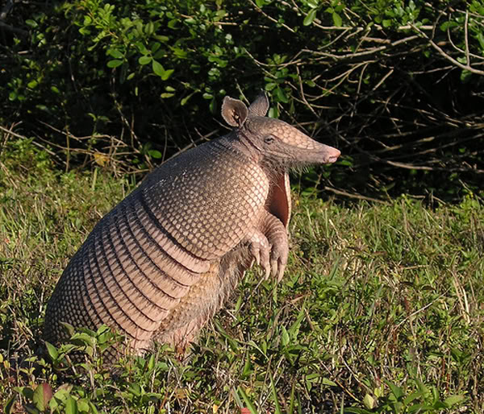

Armadillo Gigante
El Armadillo gigante puede medir hasta 150 o 160 centímetros de longitud, hasta la punta de su cola. Con este enorme tamaño pueden pesar fácilmente hasta 60 kg. En cuanto a su apariencia física, el Armadillo gigante posee como una especie de armadura ósea que recubre todo el dorso y sus costados, pero que tiene la sorprendente característica de ser sumamente flexible. El color de este animal es el amarillo por toda la parte lateral, pero un color pardo en el dorso. Su lengua le sirve de instrumento de alimentación, ya que esta segrega una sustancia pegajosa y viscosa con la cual atrapa a los insectos de forma muy fácil. Pero su arma principal son sus largas uñas, las cuales unidas a sus largas patas, les permiten construir sus casas que son como cuevas o madrigueras, además de permitirles realizar su labor más conocida, escarbar.

Su olfato también es sumamente útil para este animal, ya que le permite hallar a sus presas: los insectos. Aunque es cierto que no cuenta con todos los sentidos, como la vista porque ve en blanco y negro, esto no resulta ningún problema porque realiza sus labores especialmente en la noche, mientras que en el día están en sus madrigueras. Su hábitat se ubica en gran parte de Sudamérica, especialmente en regiones de sabanas y húmedos bosques, donde llega a vivir entre 12 y 15 años. Es en este tipo de regiones donde se reproduce, llegando a tener hasta dos crías por parto, con un período de gestación de unos 4 meses. Lamentablemente, el Armadillo gigante está en peligro de extinción, según la Unión Internacional para la Convervación de la Naturaleza (UICN) el armadillo gigante se encuentra clasificado como una especie vulnerable (VU). Principalmente debido a que el hombre se ha dado a la caza de este curioso animal, utilizando su dorso óseo para realizar adornos y, por supuesto, su carne como alimento muy costoso. Además, son transportados fuera de su hábitat para los mismos fines o para que vivan en zoológicos.